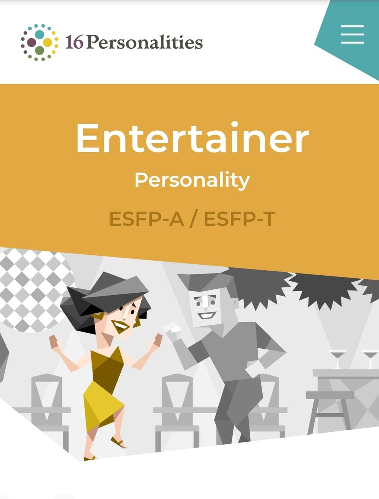
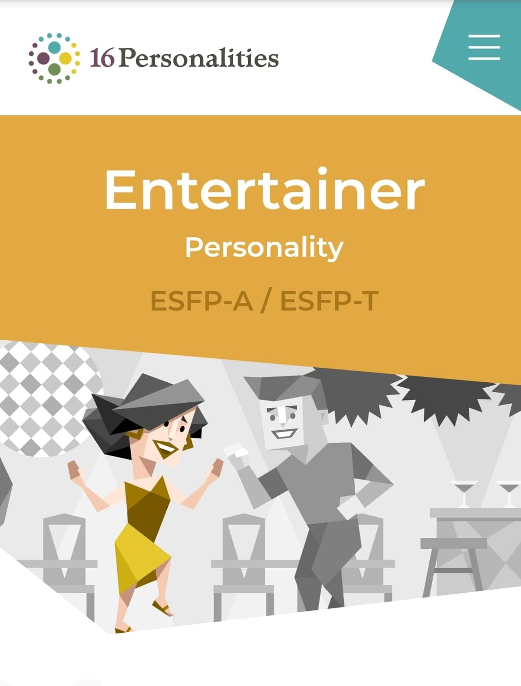

About the tests
3 personality tests that I have taken show exactly who I am. Only doing exercises or experiment can help me understand the lessons well. But, in some aspects, I'm not some kind of an entertainer because I'm not usually "hyped" and I just get hyped with the ones I know. Sometimes I'm a little bit too generous and acceptable, which I really want to change. When working as a team, I want to be more decisive, not just be dependent on my teammates or do whatever they ask me to do.
When I form a team, at first I am open to everybody. But after a period of time working together, if I or my other teammates realize someone is not doing his/her part well, we will consider kick him from the group if he/she does not improve. After all, we have to be DECISIVE , right?